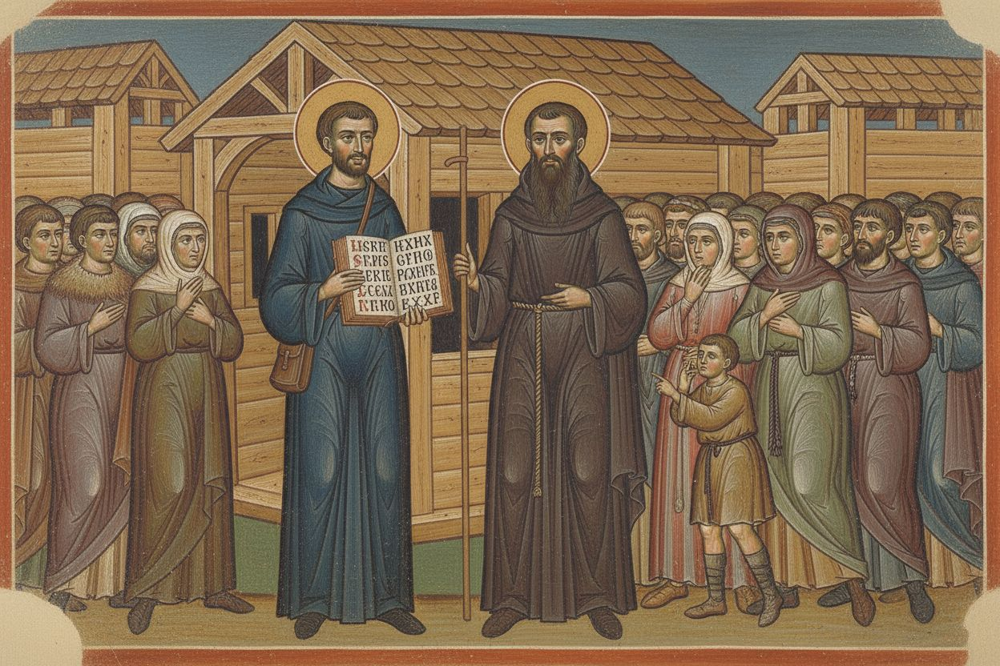
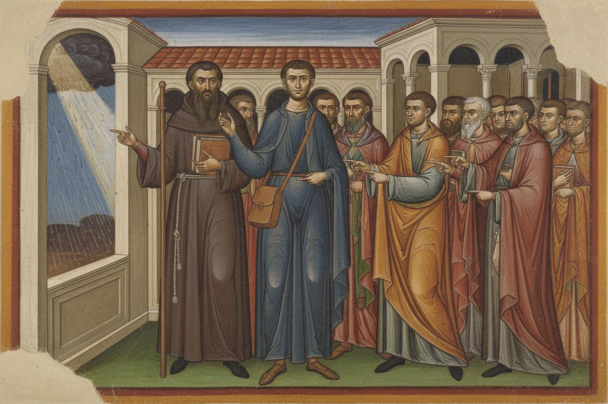
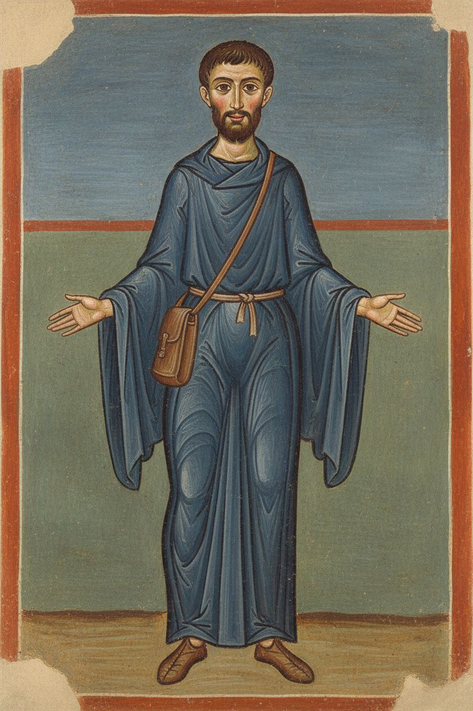
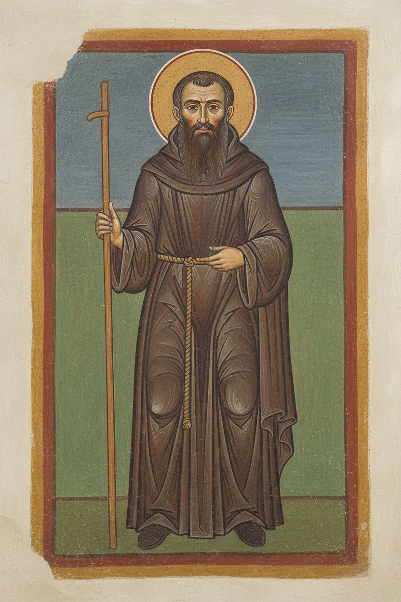

1. Words people understand
nenamalováno


2. Only three languages?
nenamalováno


Postavy v novém stylu




Styl
style: >- Romanesque Roman wall painting in the manner of the late 11th-century frescoes of the lower basilica of San Clemente in Rome, true fresco on lime plaster. Figures with strong dark-brown contour lines, flat areas of earth colour, simple modelling done with a few parallel highlight strokes in lime white rather than shading, no cast shadows and no perspective lighting. Faces with large almond eyes, long straight noses, rosy circles on the cheeks, calm frontal or three-quarter poses, expressive hands. Drapery in long rhythmic folds outlined in darker tone. Figures stand on a narrow ground strip against plain horizontal colour bands (green below, ochre or blue-grey above), framed by a painted red-and-ochre border. Buildings shown as simplified arcades, columns and tiled roofs. Visible plaster texture, slight wear and faded patches at the edges, matte surface. Not a 3D render, not glossy, no text or lettering. mood: solemn, warm, gentle, storytelling, quietly joyful, timeless, devout palette: - '#C8963E' - '#A4472D' - '#7A2E22' - '#7D8B5A' - '#5E6E73' - '#E8DCC4' - '#E2B49A' - '#3B2A20' negative: No text, no letters, no words, no watermark. aspect_ratio: '3:2'